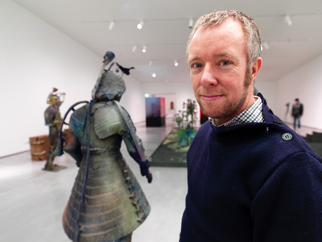

Het LAM is een museum op het landgoed Keukenhof. Dichtbij het museum staat ook het kasteel keukenhof
Geniet van het heerlijke gevoel om weer even een paar jaar terug in de tijd te gaan in het LAM museum omringt door de prachtige werken van Folkert de Jong.
Beelden, schilderijen, andere kunstwerken? Wij hebben het allemaal!
Gelooft u ons niet? Probeer onze prachtige VR experience hier beneden!
Dit programma hier onder is een WebXR, een VR experience kan je het ook noemen. Gemaakt voor iedereen om een beetje van het museum vanaf je telefoon of computer te zien voor niks. Wij hopen dat u hier van zal genieten
-Team Steve
CONTROLS:
W,A,S,D om te bewegen
Linker muis knop om mee te slepen en rond te kijken
F voor volledigscherm en dan weer Esc om daar uit te gaan
Over de kunstenaar: Folkert de Jong

Folkert de Jong is een Nederlandse beeldhouder en kunstenaar, geboren in Amsterdam (Egmond aan zee) en leeft/werkt er nu nog. Zoals je ziet bestaat zijn werk uit levensgrote beelden en meer. Al zijn werken zijn op het verleden gericht en hebben ook meestal een belangrijke betekenis erachter zitten.
De Jong is opgeleid aan de Amsterdamse Hogeschool voor de Kunsten (1994-1996) en de Rijksacademie van Beeldende Kunsten te Amsterdam (1998-2000).
Folkert’s werk wisselt erg vaak tussen kleurrijk en vrolijk en gruwelijk of duister, zelf vind hij de tweede leuker. Al zijn werk is te vinden in dit museum.